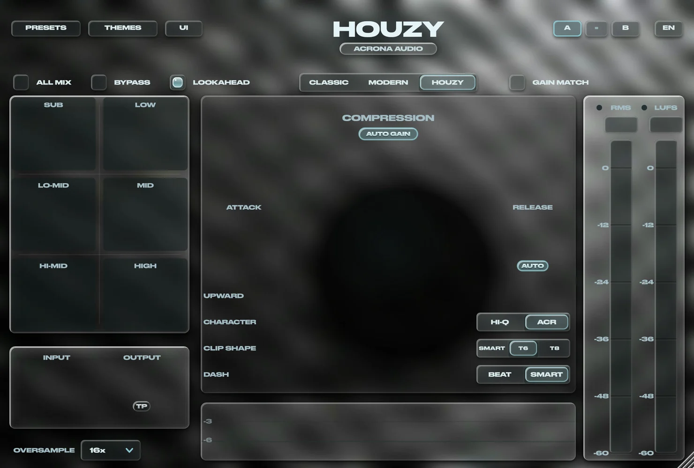

HOUZY — mastering compressorEven compression across every frequency.
When you compress, a loud kick or bass no longer drags the rest of the instruments along with it.

Try HOUZY 5 on your own trackMP3 / WAV · plays in your browser, never uploaded
Even compression across every frequency in the track.
The sound is taken apart into individual tones, and each one's loudness is evened out by its own envelope. Loud sounds don't drag the rest down, and the compressor treats every sound equally steadily, whatever the loudness of any frequency in the mix. With a loud kick, low end or midrange, it squeezes the lows and the highs just the same.
The threshold is automatic: it sets itself from the loudest sound and moves along with the track. The release is automatic too (AUTO): the plugin measures how fast the sounds fade out and sets the time itself. Every tone — kick, drums or vocal — is compressed the same way, then the level is raised back automatically, which gives you a well and densely compressed track.
Works beyond mastering too, on any track or bus, with a higher CPU load.
One number for the whole sound.
An ordinary compressor is output = gain × signal. Every classic complaint follows from that:
- The detector is blind — the whole spectrum is collapsed into one number, so a kick and a vocal of the same amplitude are indistinguishable to it.
- The kick drags everything with it — the gain drops, and the hats, the vocal and the reverb tails dive with it. That is pumping.
- Attack fights punch — one envelope has to serve both the transient and the body.
- The bass gets dirty — the gain moves, and sidebands grow around a 50 Hz kick. The compressor ruins the very thing it was evening out.
ACR — a clipper that stops chopping the highs.
An ordinary clipper slices the top off the waveform. A slice is abrupt and its error is broadband, so every kick hit subtracts that error from the hats, the vocal and the reverb tails. Hence the classic problem with clipped house: the harder you drive the kick, the duller and grittier the top end gets. Oversampling makes the error clean, but does not change where it sits in the spectrum.
Instead of slicing, ACR subtracts a short pulse placed exactly at the peak. Its spectrum puts the distortion at the top, where the hats and the kick's attack mask it. The technique comes from LTE transmitters; the pulse kernel is designed from a psychoacoustic model of hearing.
ACR is the default. HI-Q — a conventional oversampled clipper — is the other position of the switch.
T8 — the half-wave limiter.
An ordinary limiter moves its gain whenever it needs to, often right in the middle of a wave. On a kick or a bass that bends the wave itself, and you hear it as grit inside every hit.
T8 changes its gain only where the wave crosses zero. Each half-wave of the kick and bass is lowered as one whole piece, so its shape stays exactly as it was. Only its height changes.
Our own design, new in HOUZY 5. In our kick tests about 5–6 dB cleaner than T6 at the same loudness. On the SMART | T6 | T8 switch.
Attack in wave cycles, release in beat fractions.
5 ms on a 50 Hz bass note is a quarter of its wave — the gain moves inside a single oscillation, exactly where a compressor dirties the low end. The same 5 ms on an 8 kHz hat is forty cycles. So attack is set in cycles: one knob gives 45 ms at 50 Hz and 1 ms at 8 kHz, never faster than half a cycle.
A release dialled in at 128 BPM is wrong at 124, so release has two units, switched by clicking its label: NOTE, a fraction of a bar from your project tempo, or MS, plain milliseconds (default). AUTO measures how fast the sounds fade and uses that time.
Everything a master bus needs.
- AUTO GAIN — gives back exactly what the compression took.
- Spectral limiter — SMART (3 bands) or T6 (6 bands): a bass peak never ducks the highs.
- GAIN MATCH — BYPASS compares character, not loudness.
- DASH / PUNCH — from punchy to even; how much of each hit stays untouched.
- UPWARD — lifts the quiet parts: tails, air, detail.
- CLIP SHAPE — light saturation across the whole spectrum, level matched.
- CHARACTER — softer to the left, denser to the right.
- ALL MIX — 6 bands with their own compression and level (−6…+6 dB).
- TP — true peak for streaming and MP3 exports.
- PRESETS — SNOOZE to SQUISHY; the list stays open to compare by ear.
- A / B — two slots, compared at matched loudness.
- BEAT | SMART — exact release, or release as a maximum that lets a died-away tone go early.
- Meters — RMS and LUFS, gain reduction per stage and a live waveform.
About
Built for house and dance music.
HOUZY is made by ACRONA AUDIO, an independent developer. One goal: masters that are dense, glued and loud, with a punchy kick and a clean low end, without pumping and without dull highs.
HOUZY 5
A paid release with a 7-day free trial
Liquid Glass design, five themes, four colours of the sphere, the T8 limiter, a third less CPU and a manual inside the plugin in four languages.
When is HOUZY 5 out, and what will it cost?
Soon. The price will be announced at release. There is a 7-day free trial, so you can check it on your own tracks first.
What is the difference between T6 and T8?
T6 is a smooth six-band limiter. T8 changes its gain only at the zero crossings of the wave, so the bass and kick are lowered without changing their shape. Both are in HOUZY 5, and you choose by ear.
Does my audio leave my computer?
Never. All processing happens on your machine. The plugin goes online only to check for updates (you can switch this off) and to activate your licence. Details are in the Privacy Policy.
How do refunds work?
Within 14 days of purchase, after you release the activation in the plugin. Licences activated offline can't be refunded, because they can't be deactivated. Your statutory consumer rights are not affected. See the Terms of Sale.
Can I use it on single tracks, not just the master?
Yes, on any track or bus. HOUZY analyses every tone separately, so CPU load is higher than with an ordinary compressor.
Which DAWs are supported?
Any host that loads VST3 on Windows or macOS (Ableton Live, FL Studio, Cubase, Reaper, Bitwig and others), plus AU for Logic Pro and GarageBand.
Contact
Questions, bugs, licences: write to me.
For a bug, include your HOUZY version, system and DAW. In HOUZY 5 the REPORT button copies all of that for you.